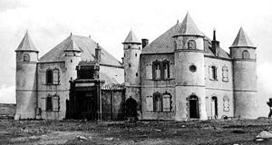
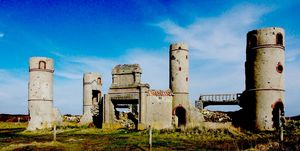
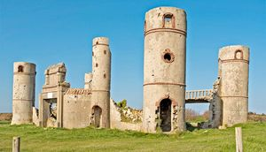
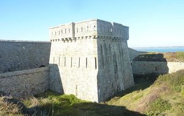
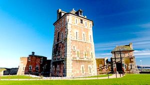
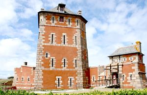
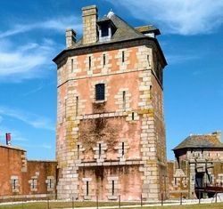
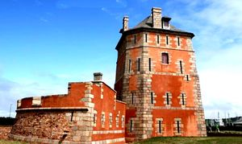
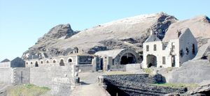

Recensement Jean-Claude Truffet









| Département | 29 — Finistère |
| Canton | Crozon |
| Commune | Camaret-sur-Mer |
| Type d'édifice | patrimoine |
| Période d'origine | XVII-XIX |
| Coordonnées GPS | 48° 16' 36" Nord, 4° 35' 44" Ouest Tour GPS : 48° 16' 47,19" Nord, 4° 35' 29,98" Ouest |
A Camaret le château de Boultous, Tourlinguer et la tour Vauban. BOULTOUS Vestiges d'une demeure baroque et tourmentée, aussi démesurée que le génie de son propriétaire, l'écrivain Saint-Pol Roux. En marge de tous les courants littéraires, il s'éloigne de la vie parisienne pour s'installer à Camaret où en 1904, il fait bâtir le château du Boultous. S'il aime y accueillir des amis célèbres, Max Jacob, Paul Eluard et Jean Moulin, sa générosité et son charisme le rapprochent des pêcheurs de Camaret. Durant la deuxième guerre mondiale, les falaises furent truffées de blockhaus allemands. Dans la soirée du 22 juin 1940, un soldat allemand ivre pénétra de force dans le château du Boultous, il y assassina Rose, la vieille servante, assomma l'écrivain et violenta sa fille Divine, puis la demeure est pillée, les manuscrits brûlés. Hospitalisé à Brest, Saint-Pol Roux y mourut de chagrin le 18 octobre. Les ruines désolées des tours sont les seules vestiges de la demeure construit en 1904 par le poète. En août 1944, le manoir est bombardé par l'aviation alliée. Il n'en subsiste depuis que des ruines. La construction du manoir date du 3ème quart du XIXe siècle. Il ne reste encore debout que ses tours d'angle. TOUR-VAUBAN, le port de Camaret possède une tour de défense côtière avec batterie basse construite par Vauban. Elle est appelée localement la Tour Vauban. Vauban, lui, la fit nommer la Tour Dorée. Cette tour, de forme polygonale, assurant la défense de la ville, est dotée d'un fossé, d'un pont-levis et d'un mur d'enceinte. Projetée dès 1683, La construction supervisée par l'ingénieur Jean-Pierre Traverse date de 1693 à 1696.
TOUR-VAUBAN, les 11 pièces d'artillerie de la batterie basse croisaient leurs feux avec ceux de la Pointe du Gouin, des lignes primitives de Quélern et des nombreuses batteries côtières. La Tour Vauban et sa batterie étaient destinées à protéger le mouillage de l'anse de Camaret et à repousser une éventuelle attaque venue de la mer. Lors de la bataille de Camaret, en 1694, la batterie, en cours dachèvement avec ses 2 corps de garde, nétait armée que de 9 canons de 24 livres de balle et 3 mortiers de fer de 12 pouces. Cette victoire valut à Camaret d'être exemptée de fouages jusqu'à la Révolution. Le four à boulets fut construit lors de la Révolution. Camaret-sur-Mer est membre de l'association de Villes Réseau des sites majeurs de Vauban. TOURLINGUET, permet l'observation de toute la largeur de la passe jusqu'à la pointe Saint-Mathieu. Un ouvrage de défense y est attesté au XIIe siècle. Des aménagements réalisés par Vauban en 1694, il ne reste que quelques vestiges au pied du phare construit en 1849. Sur le point le plus élevé de la pointe, une tour-réduit est édifiée en 1812 sur le modèle type de 1811, pour accueillir douze à dix-huit hommes. Vers 1884, elle est retranchée à la gorge par un mur défensif avec fossé maçonné passant par la tour et s'appuyant sur les escarpements nord et sud de la presqu'île, l'ensemble constituant un front rectiligne qui barre la pointe. Elevé sur trois niveaux, dont le dernier est une terrasse d'artillerie munie d'un parapet et dallée de granit, la tour contient des pièces voûtées de briques au rez-de-chaussée et une pièce unique voûtée d'arêtes en granit s'appuyant sur un pilier central au premier étage. L'unique modification apportée à l'ouvrage a été la suppression, vers 1884, du pont-levis commandant l'entrée d'origine au deuxième niveau, au profit d'une entrée de plain pied .
Boultous; Saint-Pol Roux Tour-Vauban
"
A Camaret le château de Boultous grav1-2-3, et la tour Vauban grav-5-6-7-8 et de Tourlinguet grav-4. Roscambel grav-9 GPS : 48° 16' 36" Nord, 4° 35' 44" Ouest Tour GPS : 48° 16' 47,19" Nord, 4° 35' 29,98" Ouest